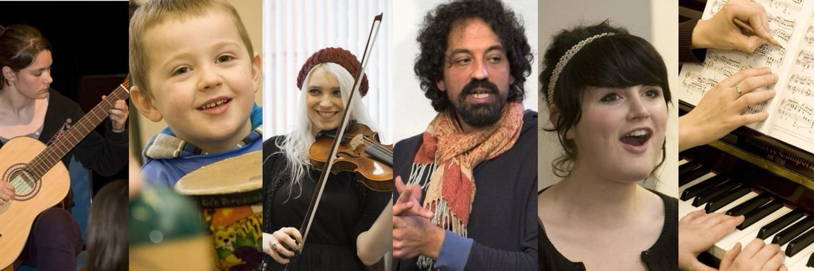

The New School
Music
The New School is a comprehensive music centre, combining expert tuition in the broadest range of instruments and subjects with innovative approaches to music education. Their external activities include an Outreach Programme, providing workshops and longer-term courses for young people and those with special needs; a Music at Work Programme, providing convenient and affordable music courses in Dublin-area workplaces; the Waltons World Masters Series, which has brought to Ireland some of the world's most extraordinary musicians and performing groups; and the Waltons Music for Schools Competition, a national competition and celebration of music in Irish schools.
Contact: 353868695415
Address: Contact for details
View on Google Maps →
Visit Website
View on Google Maps →